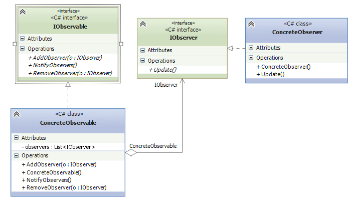

Наблюдатель
Паттерн "Наблюдатель" (Observer) представляет поведенческий шаблон проектирования, который использует отношение "один ко многим". В этом отношении есть один наблюдаемый объект и множество наблюдателей. И при изменении наблюдаемого объекта автоматически происходит оповещение всех наблюдателей.
Данный паттерн еще называют Publisher-Subscriber (издатель-подписчик), поскольку отношения издателя и подписчиков характеризуют действие данного паттерна: подписчики подписываются email-рассылку определенного сайта. Сайт-издатель с помощью email-рассылки уведомляет всех подписчиков о изменениях. А подписчики получают изменения и производят определенные действия: могут зайти на сайт, могут проигнорировать уведомления и т.д.
Когда использовать паттерн Наблюдатель?
- Когда система состоит из множества классов, объекты которых должны находиться в согласованных состояниях
- Когда общая схема взаимодействия объектов предполагает две стороны: одна рассылает сообщения и является главным, другая получает сообщения и реагирует на них. Отделение логики обеих сторон позволяет их рассматривать независимо и использовать отдельно друга от друга.
- Когда существует один объект, рассылающий сообщения, и множество подписчиков, которые получают сообщения. При этом точное число подписчиков заранее неизвестно и процессе работы программы может изменяться.
С помощью диаграмм UML данный шаблон можно выразить следующим образом:

Участники
- IObservable: представляет наблюдаемый объект. Определяет три метода: AddObserver() (для добавления наблюдателя),RemoveObserver() (удаление набюдателя) и NotifyObservers() (уведомление наблюдателей)
- ConcreteObservable: конкретная реализация интерфейса IObservable. Определяет коллекцию объектов наблюдателей.
- IObserver: представляет наблюдателя, который подписывается на все уведомления наблюдаемого объекта. Определяет метод Update(), который вызывается наблюдаемым объектом для уведомления наблюдателя.
- ConcreteObserver: конкретная реализация интерфейса IObserver.
При этом наблюдаемому объекту не надо ничего знать о наблюдателе кроме того, что тот реализует метод Update(). С помощью отношения агрегации реализуется слабосвязанность обоих компонентов. Изменения в наблюдаемом объекте не виляют на наблюдателя и наоборот.
В определенный момент наблюдатель может прекратить наблюдение. И после этого оба объекта - наблюдатель и наблюдаемый могут продолжать существовать в системе независимо друг от друга.
Рассмотрим реальный пример применения шаблона. Допустим, у нас есть биржа, где проходят торги, и есть брокеры и банки, которые следят за поступающей информацией и в зависимости от поступившей информации производят определенные действия:
class Program
{
static void Main(string[] args)
{
Stock stock = new Stock();
Bank bank = new Bank("ЮнитБанк", stock);
Broker broker = new Broker("Иван Иваныч", stock);
// имитация торгов
stock.Market();
// брокер прекращает наблюдать за торгами
broker.StopTrade();
// имитация торгов
stock.Market();
Console.Read();
}
}
interface IObserver
{
void Update(Object ob);
}
interface IObservable
{
void RegisterObserver(IObserver o);
void RemoveObserver(IObserver o);
void NotifyObservers();
}
class Stock : IObservable
{
StockInfo sInfo; // информация о торгах
List<IObserver> observers;
public Stock()
{
observers = new List<IObserver>();
sInfo= new StockInfo();
}
public void RegisterObserver(IObserver o)
{
observers.Add(o);
}
public void RemoveObserver(IObserver o)
{
observers.Remove(o);
}
public void NotifyObservers()
{
foreach(IObserver o in observers)
{
o.Update(sInfo);
}
}
public void Market()
{
Random rnd = new Random();
sInfo.USD = rnd.Next(20, 40);
sInfo.Euro = rnd.Next(30, 50);
NotifyObservers();
}
}
class StockInfo
{
public int USD { get; set; }
public int Euro { get; set; }
}
class Broker : IObserver
{
public string Name { get; set; }
IObservable stock;
public Broker(string name, IObservable obs)
{
this.Name = name;
stock = obs;
stock.RegisterObserver(this);
}
public void Update(object ob)
{
StockInfo sInfo = (StockInfo)ob;
if(sInfo.USD>30)
Console.WriteLine("Брокер {0} продает доллары; Курс доллара: {1}", this.Name, sInfo.USD);
else
Console.WriteLine("Брокер {0} покупает доллары; Курс доллара: {1}", this.Name, sInfo.USD);
}
public void StopTrade()
{
stock.RemoveObserver(this);
stock=null;
}
}
class Bank : IObserver
{
public string Name { get; set; }
IObservable stock;
public Bank(string name, IObservable obs)
{
this.Name = name;
stock = obs;
stock.RegisterObserver(this);
}
public void Update(object ob)
{
StockInfo sInfo = (StockInfo)ob;
if (sInfo.Euro > 40)
Console.WriteLine("Банк {0} продает евро; Курс евро: {1}", this.Name, sInfo.Euro);
else
Console.WriteLine("Банк {0} покупает евро; Курс евро: {1}", this.Name, sInfo.Euro);
}
}
Итак, здесь наблюдаемый объект представлен интерфейсом IObservable, а наблюдатель - интерфейсом IObserver. Реализацией интерфейса IObservable является класс Stock, который символизирует валютную биржу. В этом классе определен метод Market(), который имитирует торги и инкапсулирует всю информацию о валютных курсах в объекте StockInfo. После проведения торгов производится уведомление всех наблюдателей.
Реализациями интерфейса IObserver являются классы Broker, представляющий брокера, и Bank, представляющий банк. При этом метод Update() интерфейса IObserver принимает в качестве параметра некоторый объект. Реализация этого метода подразумевает получение через данный параметр объекта StockInfo с текущей информацией о торгах и произведение некоторых действий: покупка или продажа долларов и евро. Дело в том, что часто необходимо информировать наблюдателя об изменении состояния наблюдаемого объекта. В данном случае состояние заключено в объекте StockInfo. И одним из вариантом информирования наблюдателя о состоянии является push-модель, при которой наблюдаемый объект передает (иначе говоря толкает - push) данные о своем состоянии, то есть передаем в виде параметра метода Update().
Альтернативой push-модели является pull-модель, когда наблюдатель вытягивает (pull) из наблюдаемого объекта данные о состоянии с помощью дополнительных методов.
Также в классе брокера определен дополнительный метод StopTrade(), с помощью которого брокер может отписаться от уведомлений биржи и перестать быть наблюдателем.
Created with the Personal Edition of HelpNDoc: Generate EPub eBooks with ease